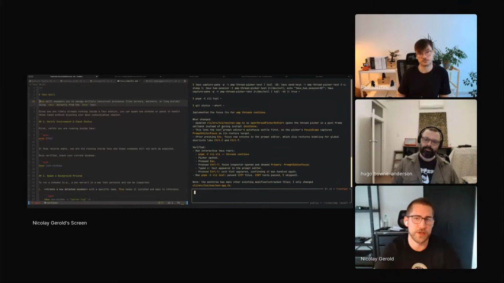
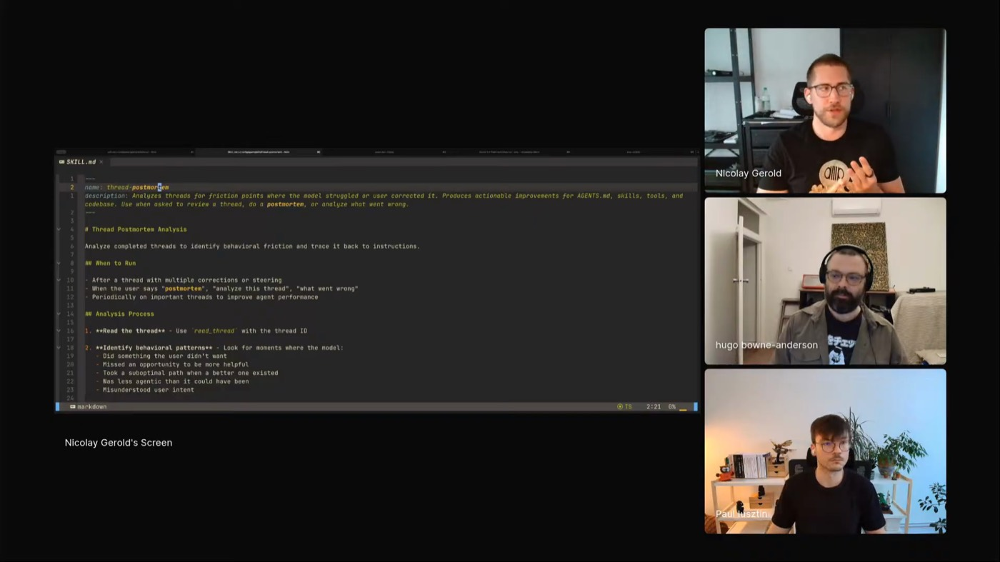

G Cloud skill
Tells the agent how to talk to Google Cloud and how AMP's services are laid out: service names, Cloud Run, Kubernetes, where the logs live. It stops rediscovering the system on every run.
 NICOLAY GEROLD
SOURCEGRAPH · AMP
THREAD-POSTMORTEM
DEBUG VIEWS
INSTRUCTION BUDGET
NICOLAY GEROLD
SOURCEGRAPH · AMP
THREAD-POSTMORTEM
DEBUG VIEWS
INSTRUCTION BUDGET
Nico builds AMP, Sourcegraph's coding agent for teams and enterprises. To make it debug its own bugs, he wires the agent its own evidence: logs it can pull, Tmux sessions it can drive, a focus inspector it can read, all inside the agent's flow, so it finds the root cause before it touches the code. Generated code runs and looks correct while quietly missing a constraint, so he would rather the model prove the bug than guess it. When a failure keeps recurring, he builds a tool the agent can operate instead of writing another instruction.

AMP is a distributed system: an engine, a proxying server, sandboxes, and the local CLI. To debug one problem the agent has to aggregate logs across all of them. The local codebase stores the running logs and the root AGENTS.md tells the agent where they live, so it can reproduce an issue, read the logs, and judge whether the reproduction actually worked.
When a failure keeps recurring, Nico gives the agent a way to see it rather than another paragraph of instructions. Storybooks, debug panes, a focus inspector: "it's often better to actually give it tools or ways where it can actually really debug it and figure out what's going on." That removes a whole class of mistake, guessing the root cause, and leaves the human reviewing design and placement.

Tells the agent how to talk to Google Cloud and how AMP's services are laid out: service names, Cloud Run, Kubernetes, where the logs live. It stops rediscovering the system on every run.
His favorite. Drives a dev build of AMP's CLI inside Tmux: sends text, fires keyboard shortcuts, reads logs, and iterates until it reproduces a bug.
Introspects a thread that went sideways, traces each misstep to the instruction behind it, and proposes edits biased toward deletion.
"Validate that it works, but also validate that the assumption the model is making about what the problem is, if you give it a bug, is also correct."
When a thread goes wrong, Nico turns the failed conversation into evidence. The skill reads the thread, finds each moment of friction, and traces it to its source: the system prompt, a tool definition, a loaded skill, or an AGENTS.md file. It sorts each one into a failure type (steering, undo, repetition, confusion, wrong tool, missing context, under-agentic, over-agentic) and proposes a concrete fix.
The choice that makes it useful is the bias toward deletion. "I tell it to always default to removing because agents always like to add new stuff instead of removing things." It is written for AMP, so it assumes the read_thread tool and ~/.config/amp/AGENTS.md. Swap in your own tool names and paths and it carries to any harness; read it first, then make it yours.

"The main failure pattern is because you have too many instructions."